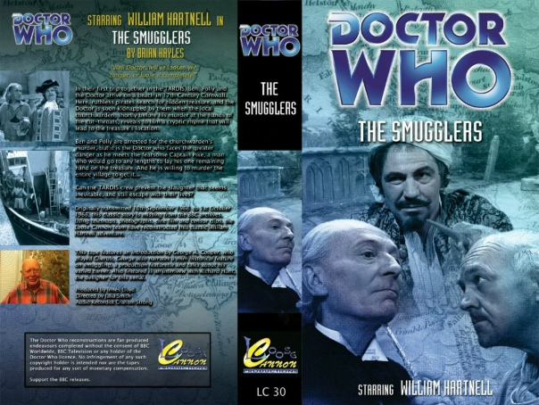
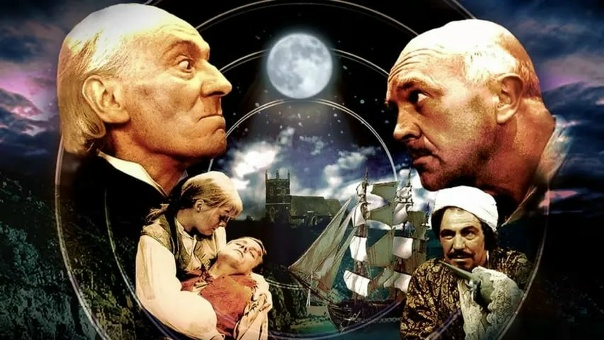
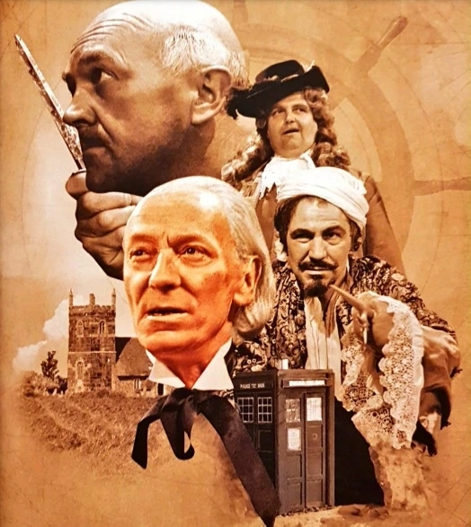

Эра Первого Доктора (4 сезон)
<<< НАЗАД ||| 1. Контрабандисты ||| ДАЛЬШЕ >>>
Субтитры: Русские и Английские |  |
|---|---|
Субтитры: отсутствуют | |
эп.1 - Отрывок- Начальная сцена (Finnholm) | эп.1 - Отрывок- Начальная сцена (Garrett Gilchrist) |
эп.1 - Отрывок- Начальная сцена (Josh Snares)
10 сентября - 1 октября 1966
4 эпизода по 25 мин.
| Все эпизоды утеряны * Имеется реконструкция |
|---|
 |  |
«Контрабандисты» переносят Первого Доктора, Бена и Полли на побережье Корнуолла XVII века, где пираты капитана Пайка охотятся за тайным кладом. Герои невольно втягиваются в авантюру: Доктор становится хранителем подсказки к сокровищам, а напряжение растёт с каждым шагом — ошибка грозит стоить жизни. Серия сплетает морскую романтику с настоящей опасностью и закрепляет союз Доктора с Беном и Полли, подводя к грядущей регенерации.
 DVD (фрагменты) 1 ноября 2004 |  LC recon - август 2008 * Версия в нашей группе |
|---|




